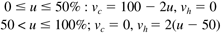

| [ Team LiB ] |
|
12.4 Split-Range ControlA split-range strategy is often used in situations where one or more valves may be used, depending on the operating scenario. An example application is a batch reactor. Batch reactors must often be heated from ambient temperature to a desired operating temperature. Particularly if the reaction is exothermic, then cooling will be needed to maintain the desired reactor temperature. In the split-range control strategy shown in Figure 12-4, if the jacket temperature controller output is between 0 and 50%, the cold glycol valve is open; if the jacket temperature controller output is between 50 and 100%, the hot glycol valve is open. For safety reasons we wish the cold glycol valve to fail-open and the hot glycol valve to fail-closed. The diagram in Figure 12-5 more clearly shows the relationship between valve positions and the jacket temperature controller output. Figure 12-4. Batch reactor temperature control. The jacket temperature controller has a split-range output, where the cold glycol valve is open during "cooling mode" and the hot glycol valve is open during "heating mode."Figure 12-5. Depiction of the split-range controller action.
The implementation is as follows. Let u represent the output of the jacket temperature controller (0–100%). Also, let vc and vh represent the cold and hot glycol valve positions, respectively. The split-range algorithm can be stated as  Sometimes there is a small deadband, where the cold glycol is open between 0 and 45%, while the hot glycol is open between 55 and 100%. This adds the equivalent of a small time delay to the control strategy but avoids situations where both cold and hot valves are open owing to small miscalibrations. Example 12.1: 1000 Liter Stirred-Tank HeaterHere we show results for a 1000 liter jacketed, continuous stirred-tank heater, operated at 85% of capacity. For clarity, we consider only the jacket temperature controller, which is split-ranged as shown in Figure 12-5. Ordinarily this jacket temperature controller would be the secondary (inner-loop or slave controller) where the output of a vessel temperature controller (outer-loop or primary controller) is the setpoint to the jacket temperature controller. The modeling equations are where the jacket make-up flow rate (Fj; of either cold or hot glycol) is the process input. Numerical values are shown in Exercise 5. The responses for setpoint changes in jacket temperature are shown in Figure 12-6. A positive setpoint change is made at t = 0 minutes, followed by a negative change at t = 10 minutes. The middle plot shows the jacket temperature controller output and the bottom plot shows the individual valve positions. All variables are in deviation form. When the controller output is positive, the hot valve is activated; when the controller output is negative, the cold valve is activated. Figure 12-6. Response to step setpoint changes in jacket temperature. All variables are in deviation form. |
| [ Team LiB ] |
|